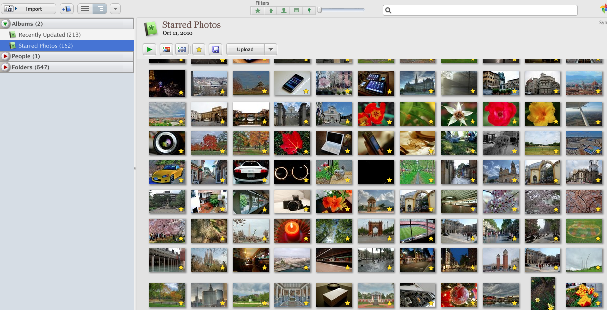
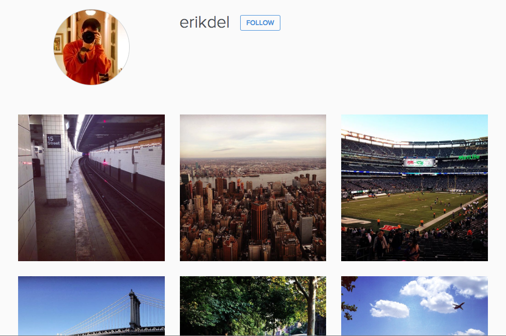

Chapter 3
Organizing, Sharing and Other Stuff
Tip 1 : Organize
Picasa gallery - Erik Lorenzana
Take advantage of your computer's photo editing/organizing tool (Photos for Mac, Windows Photo Gallery for Windows, or Picasa for any platform). Some of these programs can actually sort by date, location or even have face-recognition features. Don't be afraid to delete unwanted photos, as you acquire more, it will be a lot harder to sort/organize your album.
Tip 2 : Sharing
Instagram account - Erik Lorenzana
What good are your photos if you don't let anyone see them? You can easily share your pictures at Google+, Facebook, Instagram, Twitter, etc. Tagging your photos will give you even more exposure, and some sites will even let you earn some commission!
Tip 3 : Experiment

My gallery - Erik Lorenzana
Don't be afraid to try something new (take a shot at a different angle, fill-up the frame, ignore the 1/3 rule, etc). Some of the tips here are really just guidelines - experiment, explore, push the boundaries. You might just come up with a very unique photo.